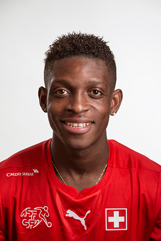
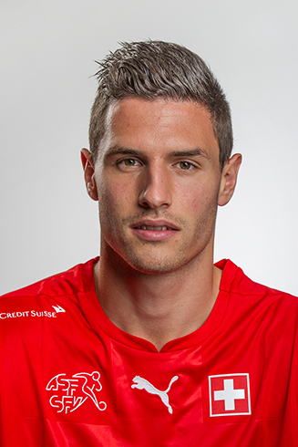

Yann Sommer (27), Gladbach, 18 Länderspiele, 0 Tore

Roman Bürki (25), Borussia Dortmund, 4 Länderspiele, 0 Tore

Marwin Hitz (28), FC Augsburg, 2 Länderspiele, 0 Tore

Johan Djourou (29), HSV, 60 Länderspiele, 2 Tore

Nico Elvedi (19), Gladbach, 1 Länderspiel, 0 Tore

Michael Lang (25), FC Basel, 16 Länderspiele, 2 Tore

Stephan Lichtsteiner (32), Juventus Turin, 80 Länderspiele, 5 Tore

Jean-François Moubandje (25), 10 Länderspiele, 0 Tore

Ricardo Rodriguez (23), 36 Länderspiele, 0 Tore

Fabian Schär (24), FC Hoffenheim, 19 Länderspiele, 5 Tore

Steve Von Bergen (32), YB, 49 Tore, 0 Tore

Valon Behrami (31), FC Watford, 65 Länderspiele, 2 Tore

Eren Derdiyok (27), Kasimpasa, 51 Länderspiele, 10 Tore

Blerim Dzemaili (30), 47 Länderspiele, 6 Tore

Breel Embolo (19), FC Basel, 9 Länderspiele, 1 Tor

Gelson Fernandes (29), 56 Länderspiele, 2 Tore

Fabian Frei (27), FSV Mainz, 7 Länderspiele, 1 Tor

Admir Mehmedi (25), Bayer Leverkusen, 41 Länderspiele, 3 Tore

Haris Seferovic (24), Eintracht Frankfurt, 30 Länderspiele, 7 Tore

Xherdan Shaqiri (24), Stoke, 52 Länderspiele, 17 Tore

Shani Tarashay (21), GC, 3 Länderspiele, 0 Tore

Granit Xhaka (24), Gladbach, 42 Länderspiele, 6 Tore

Denis Zakaria (19), YB, 1 Länderspiel, 0 Tore